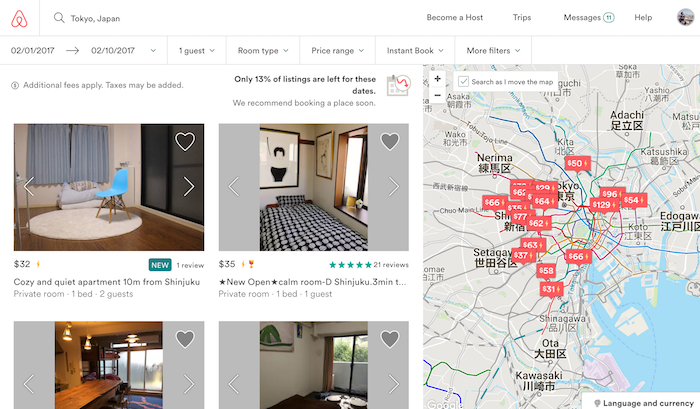

Bill Derouchey's slideshow on interface design
Jan 31th, 2017
According to Bill's slideshow, a best interface design should have three key elements:priority,clarity and purpose. So I test out Airbnb website. Priority: I really like the design of Airbnb. The color is simple and beautiful. The size is suitable. When the browser select the guest number, or type in the city, the size of the text is big enough to read.

Clarity: the icon insides the website is very clear, especially insides the Amenities section. Even a hair dryer has its own icon standing for. The words are all simple to understand and it has many language and money type to choose, which fits browser from all over the world
Purpose: The filter option is very detail. It can shows the result exactly what the browsor want. It is very simple and clear. Most importantly, It has photo to browser, which allows the browser better look at the vacation rental before their actually see the house/rooms. And the map also is on the side, which is easy for browser to look at.
All in all, I think Airbnb website is very good example of interface design. It is very clear and simple, of course it is also very nice design.